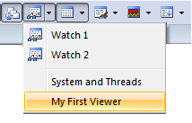

If you just want to display execution status information, you only require Component Viewer. Use the example project Simple SCVD Example as an introduction to the Component Viewer.
The example shows:
- a simple *.scvd file
- how to build a hierarchy in the output
- the use of Format Specifiers
The output shows the values of two structure members (in HEX and decimal). The low member is an integer running from [0..30], while the hi member is the square of low. The output shows the values as decimal and HEX on different rows.

Simple Example
The following code creates a type called "MyGeneralType" that emulates the program structure MyType defined in main.c. The object that is to be displayed searches for the symbol mysymbol and shows the items hi and low in the viewer window:
main.c File
#include "RTE_Components.h" // Component selection
#include CMSIS_device_header // Device header
typedef struct { // type definition
uint32_t hi; // offset 0
uint32_t low; // offset 4
} MyType;
extern volatile MyType mysymbol; // avoid compiler 6 warning
MyType volatile mysymbol; // symbol definition
int main(void) {
uint32_t i;
while (1) {
for( i=0; i<=30; i++ ) {
mysymbol.hi = i*i;
mysymbol.low = i;
}
}
}
Simple_View.scvd File
<component_viewer schemaVersion="0.1" xmlns:xs="http://www.w3.org/2001/XMLSchema-instance" xs:noNamespaceSchemaLocation="Component_Viewer.xsd">
<component name="MyFirstComponent" version="0.0.1"/> <!-- name and version of the component -->
<typedefs>
<typedef name="MyGeneralType" info="This is MyType with 2 members" size="12">
<member name="hi" type="uint32_t" offset="0" info="member 'mysymbol.hi'"/>
<member name="low" type="uint32_t" offset="4" info="member 'mysymbol.low'"/>
</typedef>
</typedefs>
<objects>
<object name="MyFirstObject">
<read name="MyFirstSymbol" type="MyGeneralType" symbol="mysymbol" const="0"/>
<out name="My First Viewer"> <!-- Window name -->
<item property="Square of numbers [0..30]"> <!-- Property entry -->
<!-- These items extend the entry above -->
<item property="Hi [dec]" value="%d[MyFirstSymbol.hi]" info="Show decimal value of 'mysymbol.hi'"/>
<item property="Low [dec]" value="%d[MyFirstSymbol.low]" info="Show decimal value of 'mysymbol.low'"/>
<item property="Hi [hex]" value="%x[MyFirstSymbol.hi]" info="Show HEX value of 'mysymbol.hi'"/>
<item property="Low [hex]" value="%x[MyFirstSymbol.low]" info="Show HEX value of 'mysymbol.low'"/>
</item>
</out>
</object>
</objects>
</component_viewer>
The Simple_View.scvd file has been added to the project as described in Manage Component Viewer Description Files.
Build and run
- Open the project "Simple SCVD Example" from Pack Installer (search for uVision Simulator in the Boards tab).
- Compile and run the application.
- Open the window View - Watch Windows - My First Viewer and watch the values change while the program runs.
